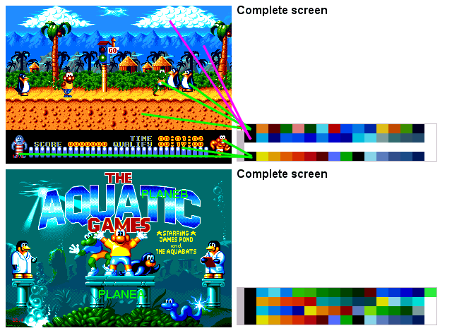

Pic 9 - What about color palettes?
1-There are 4 color-palettes in the genny (16-1 colors each).
2-You can assign 1 palette per sprite.
3-You can assign 1 palette per tile displayed on a plane (So you can théoricaly display 64-3 colors on a same plane).
